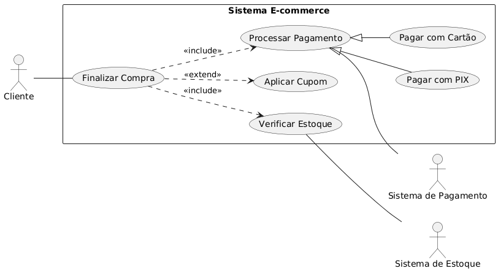

Qualidade de Software
Planejamento de Testes e Casos de Teste
Professor Afonso
2026.1Agenda
- IEEE 829: Documentação de Testes
- Personas e Análise de Stakeholders
- Use Cases (IEEE 830 / UML 2.5)
- Diagramas UML de Caso de Uso
- Derivação de Test Cases
Standard for Test Documentation
"Documento que descreve o escopo, abordagem, recursos e cronograma das atividades de teste. Identifica itens de teste, funcionalidades a serem testadas, tarefas, responsáveis e riscos."
| Artefato | Propósito | Quando Produzir |
|---|---|---|
| Test Plan | Estratégia geral, escopo, critérios de entrada/saída | Início do projeto |
| Test Case Specification | Casos de teste individuais com inputs/outputs esperados | Após definição de requisitos |
| Test Procedure | Passos detalhados para execução | Antes da execução |
| Test Log | Registro cronológico da execução | Durante execução |
| Test Summary Report | Avaliação dos resultados, decisão de release | Após execução |
Hierarquia de Planejamento de Testes
ISO/IEC 29119 - Processo de Teste de Software
Requisitos
Funcionais e Não-FuncionaisUse Cases
Fluxos de interaçãoTest Cases
Cenários específicosTest Data
Dados de entradaPersonas
"Representação arquetípica de um grupo de usuários baseada em dados demográficos, comportamentais e psicográficos. Utilizada para guiar decisões de design e validar cenarios de teste."
| Atributo | Descrição | Impacto no Teste |
|---|---|---|
| Demographics | Idade, profissão, nivel técnico | Define complexidade aceitável da UI |
| Goals | Objetivos primários e secundários | Define casos de uso prioritários |
| Pain Points | Frustrações e dificuldades | Define testes negativos e de usabilidade |
| Context of Use | Dispositivo, ambiente, frequência | Define matriz de compatibilidade |
| Technical Proficiency | Nível de habilidade técnica | Define threshold de usabilidade |
Personas - Sistema E-commerce
Cada persona representa um cluster de usuários com comportamentos similares
Maria, 22
End User - CasualGoal: Encontrar livros com melhor custo-beneficio
Context: Mobile (85%), baixa laténcia tolerada
Pain Point: Checkout complexo, frete alto
Tech Level: Intermediário
Test Focus: Mobile-first, fluxo de compra simplificado
Carlos, 45
End User - PowerGoal: Compras rápidas, histórico de pedidos
Context: Desktop (90%), múltiplas abas
Pain Point: Lentidão, muitos cliques
Tech Level: Avançado
Test Focus: Performance, shortcuts, bulk actions
Ana, 35
Admin UserGoal: Gerenciar estoque, processar pedidos
Context: Desktop, uso prolongado (8h+)
Pain Point: UI inconsistente, falta de atalhos
Tech Level: Avançado
Test Focus: Fluxos admin, relatórios, RBAC
Use Cases
"Especificação de uma sequência de ações, incluindo variantes, que um sistema (ou entidade) pode executar, interagindo com atores do sistema, para produzir um resultado observável de valor."
Componentes Obrigatórios
- ID e Nome: UC-XXX: Verbo + Objeto
- Ator Primário: Quem inicia
- Pre-condições: Estado antes
- Pos-condições: Estado apos (sucesso)
- Fluxo Básico: Happy path
- Fluxos Alternativos: Variações validas
- Fluxos de Exceção: Tratamento de erros
Componentes Opcionais
- Atores Secundários: Sistemas externos
- Trigger: Evento que inicia
- Frequência: Vezes/dia, mês
- Requisitos Especiais: NFRs
- Regras de Negócio: BR-XXX
- Notas: Decisões de design
Use Case Specification
UC-003: Finalizar Compra /* Identificação */ Ator Primário: Cliente (Personas: Maria, Carlos) Atores Secundários: Payment Gatéway, Inventory Service, Email Service Trigger: Cliente clica em "Finalizar Compra" no carrinho /* Condições */ Pre-condições: [PRE-1] Usuário autenticado (sessão valida) [PRE-2] Carrinho.items.length >= 1 [PRE-3] Para cada item: Inventory.available(item.sku) >= item.qty Pos-condições (Sucesso): [POS-1] Order criada com status = PENDING_PAYMENT [POS-2] Inventory reservado (soft lock) [POS-3] Email de confirmação enviado /* Fluxo Básico */ 1. Sistema exibe Order Summary (items, subtotal, shipping options) 2. Cliente seleciona endereço de entrega [A1: Novo endereço] 3. Sistema calcula frete via Shipping Service 4. Cliente seleciona método de pagamento [A2: Novo cartão] 5. Sistema tokeniza dados via Payment Gatéway 6. Cliente confirma pedido 7. Sistema valida estoque (double-check) [E1: Item indisponível] 8. Sistema processa pagamento [E2: Pagamento recusado] 9. Sistema cria Order, reserva estoque 10. Sistema envia email de confirmação 11. Sistema exibe Order Confirmation (numero, prazo) /* Fluxos Alternativos */ [A1] Novo endereço: 2a. Cliente clica "Adicionar endereço" 2b. Sistema exibe form de endereço 2c. Cliente preenche e salva -> Volta ao passo 3 [A2] Novo cartão: 4a. Cliente clica "Adicionar cartão" 4b. Sistema exibe form PCI-compliant 4c. Cliente preenche -> Volta ao passo 5 /* Fluxos de Exceção */ [E1] Item indisponível: 7a. Sistema exibe erro com item(s) afetado(s) 7b. Sistema oferece: remover item ou notificar quando disponivel 7c. Use case termina ou volta ao passo 1 [E2] Pagamento recusado: 8a. Sistema exibe mensagem do gatéway 8b. Sistema permite retry com outro método 8c. Volta ao passo 4
Notação de Diagrama de Caso de Uso
Actor
Entidade externa que interage. Pode ser usuário humano ou sistema.
Use Case
Elipse com nome (verbo no infinitivo + objeto direto)
System Boundary
Retângulo que delimita o escopo. Atores ficam fora.
Association
Linha sólida (sem seta). Indica que ator participa do UC.
Verbo + Objeto no infinitivo.
Correto: "Cadastrar Usuário", "Emitir Relatório". Incorreto: "Tela de Login", "Gerenciar Usuários".
Relações entre Use Cases
<<include>>
Semântica: UC base sempre executa UC incluído.
Direção: Base --include--> Incluido
Use quando: Fatorar comportamento comum obrigatório (ex: autenticação)
<<extend>>
Semântica: UC extensor opcionalmente estende UC base.
Direção: Extensor --extend--> Base
Use quando: Comportamento condicional em extension point
Generalization
Semântica: UC filho herda comportamento do pai.
Direção: Filho --|> Pai (seta fechada)
Use quando: Variações de um mêsmo caso de uso
Anatomia do Diagrama de Caso de Uso

-
1. Ator
Representa uma entidade (usuário ou sistema) que interage com o software. Ex: Cliente. -
2. Caso de Uso (Elipse)
Descreve uma funcionalidade principal que agrega valor. Ex: Finalizar Compra. -
3.
Relação obrigatória. "Finalizar Compra" sempre precisa "Verificar Estoque" e "Processar Pagamento".<<include>>(Seta Tracejada) -
4.
Relação opcional. "Aplicar Cupom" pode ou não ser usado durante o "Finalizar Compra".<<extend>>(Seta Tracejada) -
5. Generalização (Seta de Ponta Oca)
Indica especialização (herança). "Pagar com PIX" é um tipo específico de "Processar Pagamento". -
6. Associação (Linha Sólida)
Conecta um ator a um caso de uso, indicando participação.
Derivação de Test Cases
Cada fluxo do Use Case gera um ou mais Test Cases
| Origem (UC-003) | Test Case | Tipo | Prioridade |
|---|---|---|---|
| Fluxo Básico (1-11) | TC-001: Compra com cartão crédito - sucesso | Positivo | P1 |
| Fluxo Alternativo [A1] | TC-002: Compra com novo endereço | Positivo | P2 |
| Fluxo Alternativo [A2] | TC-003: Compra com novo cartão | Positivo | P2 |
| Fluxo Exceção [E1] | TC-004: Item fica indisponível durante checkout | Negativo | P1 |
| Fluxo Exceção [E2] | TC-005: Pagamento recusado - saldo insuficiente | Negativo | P1 |
| Pre-condição [PRE-1] | TC-006: Checkout sem autenticação | Negativo | P2 |
| Pre-condição [PRE-2] | TC-007: Checkout com carrinho vazio | Negativo | P3 |
Test Case Specification (IEEE 829)
TC-001: Compra com cartão crédito - sucesso /* Rastreabilidade */ Use Case: UC-003 - Finalizar Compra (Fluxo Básico) Requisito: RF-015 - Sistema deve processar pagamentos com cartão Prioridade: P1 (Critical Path) Tipo: Funcional | Positivo | E2E | Regression /* Setup */ Pre-condições: - Usuário: test_user_001@test.com (autenticado) - Carrinho: [{ sku: "BOOK-001", qty: 1, price: 89.90 }] - Estoque BOOK-001: available >= 1 - Endereço cadastrado: ID=ADDR-001 Test Data: - Card: 4111111111111111 (Visa sandbox - approved) - CVV: 123 | Exp: 12/28 - CEP: 01310-100 (Frete calculado: R$ 15.00) /* Execution */ Steps: 1. GET /cart -> Assert items.length == 1 2. POST /checkout/start -> Assert 200, returns checkout_id 3. PUT /checkout/{id}/shipping { address_id: "ADDR-001" } 4. GET /checkout/{id}/shipping-options -> Assert frete = 15.00 5. PUT /checkout/{id}/payment { card_token: "tok_visa" } 6. POST /checkout/{id}/confirm /* Verification */ Expected Results: - Response: 201 Creatéd - Body: { order_id: "ORD-XXXXX", status: "CONFIRMED", total: 104.90 } - DB: Orders table has new record with status = "PENDING_FULFILLMENT" - DB: Inventory.reserved(BOOK-001) incremented by 1 - Email: Confirmation sent to test_user_001@test.com - Laténcy: p99 < 3000ms (incluindo gatéway) Cleanup: - Cancel order via admin API - Release inventory reservation
Requirements Traceability Matrix
Garantindo cobertura e rastreabilidade bidirecional
| Requisito | Use Case | Test Cases | Cobertura | Último Resultado |
|---|---|---|---|---|
| RF-001: Autenticação | UC-001 | TC-001..004 | 100% | PASS |
| RF-010: Busca de produtos | UC-002 | TC-010..015 | 100% | PASS |
| RF-015: Checkout | UC-003 | TC-020..027 | 100% | FAIL (TC-025) |
| RF-020: Gestão de estoque | UC-010 | TC-050..052 | 60% | NOT RUN |
| RF-025: Relatórios | UC-015 | - | 0% | - |
- Requirements Coverage: (Requisitos com TC / Total Requisitos) = 4/5 = 80%
- Test Execution Raté: (TCs executados / Total TCs) = 19/22 = 86%
- Pass Raté: (TCs passed / TCs executados) = 18/19 = 94.7%
Ferramentas
Draw.io / Diagrams.net
Diagramas UML gratuito, integra com GitHub
diagrams.net
PlantUML
UML as Code, versionavel, CI/CD friendly
plantuml.com
TestRail / Zephyr
Test Case Management, integração Jira
testrail.com
GitHub Issues + Labels
Rastreabilidade com links entre issues
github.com
PlantUML Example
Exercício Prático
Entregáveis
Sistema: E-commerce de Livros
- 2 Personas documentadas (formato tabular)
- 3 Use Cases completos (com fluxos alternativos e exceções)
- 1 Diagrama UML de Caso de Uso (PlantUML ou Draw.io)
- 6 Test Cases derivados (3 positivos, 3 negativos)
- Matriz de Rastreabilidade (Requisito -> UC -> TC)
Use Cases Sugeridos
- UC: Cadastrar Usuário (com verificação de email)
- UC: Recuperar Senha (com token expirável)
- UC: Avaliar Livro (com moderação)
- UC: Cancelar Pedido (com regras de prazo)
- UC: Solicitar Reembolso (com workflow de aprovação)
- UC: Gerar Relatório de Vendas (com filtros)
/docs contendo arquivos Markdown e diagrama PNG/SVG.
Estrutura sugerida: /docs/personas.md, /docs/use-cases/, /docs/test-cases/
Estrutura do Plano de Teste
Seções essenciais para um plano claro e auditável
Conteúdo Obrigatorio
- Escopo: o que entra e o que fica fora
- Objetivos: metas e critérios de sucesso
- Abordagem: niveis, tipos e técnicas
- Ambiente: infra, dados e ferramentas
- Critérios: entrada, saída e suspensão
- Riscos: probabilidade, impacto e mitigação
Conteúdo Recomendado
- Métricas: cobertura, pass raté, defeitos
- Estimativas: esforço e cronograma
- Recursos: pessoas, papéis e responsabilidades
- Comunicação: cadencia e stakeholders
- Dependências: APIs, dados, ambientes
- Aprovação: aceite e sign-off
Critérios de Entrada e Saida
Gatés que reduzem risco e evitam retrabalho
| Tipo | Exemplos | Racional |
|---|---|---|
| Entrada | Build estável, requisitos aprovados, dados disponíveis | Evita iniciar testes sem insumos mínimos |
| Suspensao | Taxa de falha crítica > 30%, ambiente instável | Protege tempo da equipe e evita ruído |
| Saida | Cobertura alvo, defeitos P1 = 0, RTM 100% | Define pronto para release ou próxima fase |
Estimativas e Cronograma
Planejamento realista evita gargalos no fim do ciclo
Exemplo simplificado (Sprint de 2 semanas)
| Atividade | Esforco | Dependencia | Owner |
|---|---|---|---|
| Revisão de requisitos | 4h | Documento aprovado | QA Lead |
| Design de casos | 12h | Requisitos estaveis | QA |
| Preparação de dados | 6h | Ambiente pronto | DevOps |
| Execução + regressao | 16h | Build candidaté | QA Team |
| Relatório final | 2h | Resultados consólidados | QA Lead |
Riscos e Mitigação
Risco = probabilidade x impacto
Exemplos
- Ambiente instável
- Mudança tardia de requisito
- Dependencia externa off-line
- Baixa cobertura automatizada
- Dados sensíveis indisponíveis
Mitigações
- Ambientes espelho + health checks
- Freeze de requisitos por sprint
- Mocks e stubs para APIs críticas
- Smoke suite obrigatória
- Dados sintéticos e mascaramento
Monitoramento
- Risco revisado semanalmente
- Owner e plano de ação definidos
- Indicadores: lead time e flakiness
- Escalonamento quando P x I alto
- Registro no Test Log
Resumo
Conceitos
- IEEE 829: Estrutura de documentação de testes
- Personas: Arquétipos para guiar design e testes
- Use Cases: Fluxos de interação com o sistema
- UML: Atores, elipses, include/extend
- Test Cases: Derivados dos fluxos do UC
- RTM: Rastreabilidade bidirecional
Próxima Aula
- Testes Caixa Branca vs Caixa Preta
- Equivalence Partitioning
- Boundary Value Analysis
- Decision Table Testing
- Staté Transition Testing